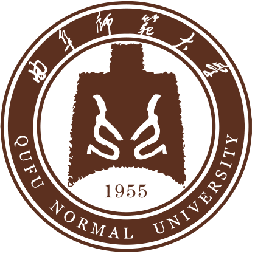

Education
|
中国科学技术大学（USTC）
2023.09 - 至今
计算机技术 硕士一年级在读（保研）
|
||
|  |
曲阜师范大学 (QFNU)
2019.09 - 2023.06
物联网工程 本科
|
Industry Experiences
|
|
腾讯-优图实验室
2023.09
计算机视觉研究实习生
研究主题：基于 ControlNet 的大型文本编辑扩散模型。
|
|
|
|
清华大学-汽车安全与节能国家重点实验室
2022.03 – 2023.03
研究实习生
研究主题：夜晚场景下的多模态车道线感知算法研究。
|
Publications
Structure-Guided Diffusion Transformer for Low-Light Image Enhancement
Submitted'24
Submit to IEEE Transactions on Circuits and Systems for Video Technology (TCSVT).
[Paper]

Adaptive Entropy Multi-modal Fusion for Nighttime Lane Segmentation
TIV'24
IEEE Transactions on Intelligent Vehicles (TIV).
学生一作（导师一作），中科院一区top，IF=8.2
学生一作（导师一作），中科院一区top，IF=8.2
[Paper]

PE-YOLO: Pyramid Enhancement Network for Dark Object Detection
ICANN'23
International Conference on Artificial Neural Networks (ICANN).
CCF C
CCF C


Lightweight Two-stage Transformer for Low-light Image Enhancement and Object Detection
DSP'24
Digital Signal Processing (DSP).
中科院三区
中科院三区
[Paper]
Awards & Honors
| 2024 | CVPR2024 Workshop Physics Based Vision Meets DeepLearning (PBDL) sRGB低光照图像增强赛道A榜冠军（截止至04.21）。 |
| 2022 | 第十五届中国大学生计算机设计大赛全国总决赛三等奖 |
| 2021 | 第十二届蓝桥杯全国软件信息技术人才大赛全国总决赛二等奖（全国 2.5%） |